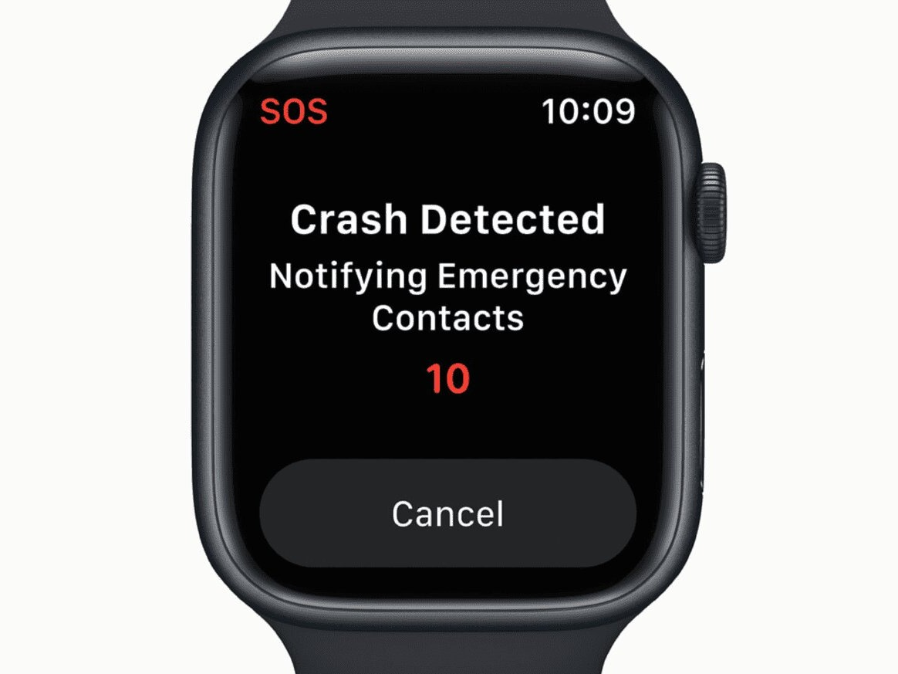
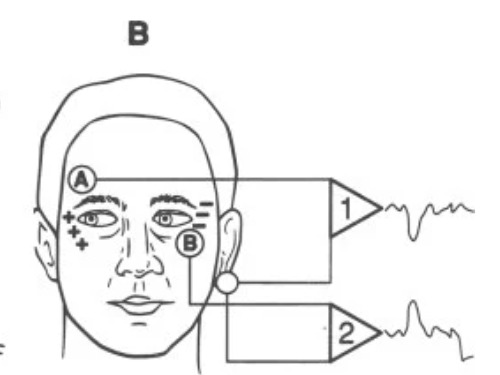

About Me
Get to know my background, interests, and what motivates me.
From hardware to human interfaces, here's a snapshot
of the problems I'm exploring and building solutions for.
Wearable Technology
for Crash Detection
Human Computer Interfaces
for Paralyzed Individuals
Analog Mixed-Signal
Module Design

An 8-week Embedded Systems project focused on crash detection and notification using an ESP32, accelerometer, and gyroscope. Made for ECE1100.

Projects I've been working on outside the classroom. Topics range from bioengineering to heated sports equipment.
My long-term vision is to design technology that improves human lives, from assistive devices to safety systems at the intersection of hardware and bioengineering.
A few things I've picked up along the way.
Designing and programming hardware for real-world sensing and control applications.
Building applications and tools in Python and C++.
Analog and mixed-signal design for precision electronics and signal processing.
Creating interfaces and systems that work for those with disabilities.
Breaking down complex engineering challenges into clear, actionable solutions.
Curious about how things work and driven to explore new ideas through hands-on experimentation.
Interested in connecting or collaborating? Feel free to reach out.